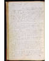
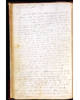
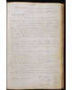

The Official Story
Chapter 1
The New Minister
The town records reveal that Hallowell's choice of a new minister in 1786 was controversial. They also reveal that Judge North and Martha's husband were both involved. Take a look at the Hallowell 1785 and 1786 town records. You can see that Joseph North was chosen to be on the committee appointed by the town in May 1785 to "procure preaching," and that the town selectmen (including Martha's husband Ephraim) were chosen for this committee less than one year later. Why is evidence about church business found in the town records? Because the minister's salary was paid with town taxes -- so the choice of a new minister was up to the town meeting. (The separation of church and state evolved over the next hundred years.)In the tumultuous years after the American Revolution, new religious beliefs and new religious sects (Baptists, Methodists, Unitarians, Universalists, and others) proliferated throughout New England, especially in frontier settlements. If you compare these maps of the churches in mid-Maine in the year 1790, in 1800, and in 1810 you can see how many new churches sprang up in the backcountry in just twenty years. This led to fights over which minister to hire with taxpayers' money. Conflicts erupted all over New England. In fact, two of the five ministers who participated in the ordination of Hallowell's new minister were deposed within five years. Religious controversy was in the air.
The town records also reveal that two candidates for the Hallowell job had already been turned down when Isaac Foster arrived from Connecticut, as a job candidate, to preach in April. On May 8, the town meeting voted to offer the young pastor a job; the vote was 57 to 4.
We can read the letter of acceptance Foster wrote. In it, he writes, "Permit me, my Brethren, to rely on your candor while I faithfully improve the talent God has given me for your spiritual good." All seemed well.
| Did Martha say anything about hiring the new minister? |

| previous |
Indictment for an Assault | |
| next |
But the town clerk, Henry Sewall, mounted an attack against the young minister... |
| Hallowell Town Records (Original) Town of Hallowell Officials |
View Image View Frames version |
Folio 92 indicates a plan to form a committee to procure a preacher. Folio 98 records a vote to appoint the town's selectmen to "said committee." And Folio 107 shows that Ephraim Ballard was a selectman in 1786 -- so as a selectman, he was on the committee.
| 92 ( |
98 ( |
107 ( |
 |
 |
 |
|
folio 92 ( |
|
|||||||||||||||||||||
|
||||||||||||||||||||||
|
|
||||||||||||||||||||||